Screening research papers with large language models sounds simple: collect some papers, write a prompt, send it to a model. In practice it quickly turns into a pile of scripts, half-remembered prompt versions, and CSV files named results_final_v3.csv.
llmexer is a small CLI that keeps this workflow in order. Its core idea is that everything is a file: projects, searches, prompts, model lists and results all live as plain YAML, CSV, text and SQLite files inside one project folder. The CLI edits these files for you, but you can always open and change them by hand, and you can put the whole folder under git.
In this tutorial we walk through a complete run: we search the literature on demand-driven air quality monitoring, turn the results into a dataset, pair it with an LLM prompt, run the experiment against several models, and export a report you can screen in the browser.
⚠️
llmexeris in early beta, so commands and output may change between versions. This tutorial was written against version 0.4.7.
What you need
- Python
uv(pipworks as well)- Access to at least one LLM: a local ollama or vLLM server, or an API key for LiteLLM or OpenRouter
Step 1: Install llmexer
uv pip install --upgrade llmexer
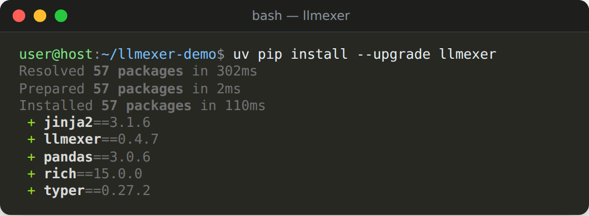
Check that the CLI is available:
llmexer self version
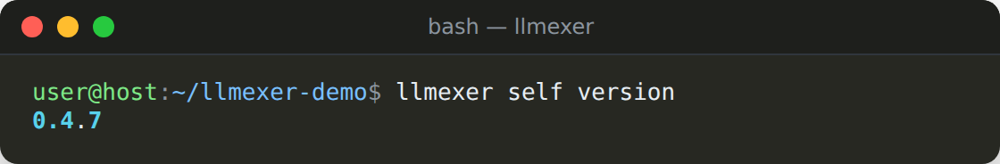
Running llmexer --help shows every available option at any point. There is also a help option for each command, for example: llmexer exp stats --help
Configure access to your LLMs
llmexer reads its settings from a .env file in the directory you run it from. Add the providers you want to use, for example:
# local ollama (example with default avlue)
PROVIDER_OLLAMA_URL=http://localhost:11434/v1
# optional: a second search engine next to Semantic Scholar
OPENALEX_API_KEY=...
The full list of variables is in the configuration section of the README.
You can check what llmexer picked up with llmexer self envs.
Step 2: Create a new project
A project is the top-level folder that holds your searches, papers, experiments and analysis.
llmexer project create --id 0testruns
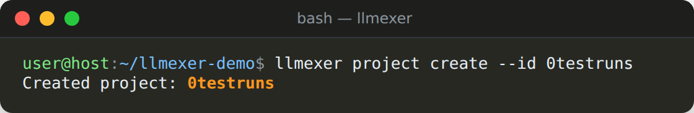
The project lives in .projects/0testruns/. If you don't pass --id, a date-based ID such as 20260924-3a9adf70 is generated for you.
💡 Tip: add
PROJECT_ID=0testrunsto your.envfile and you can leave out--pidfrom every command below.
Step 3: Create a search
To start the search, a file with a search string should be created first:
llmexer search create --pid 0testruns
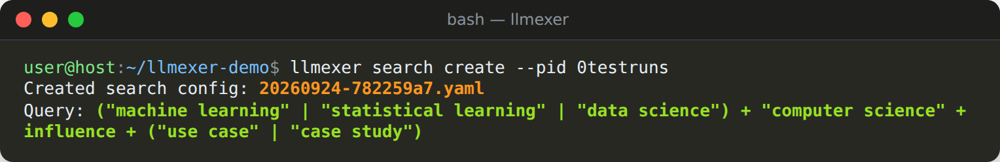
This writes a search configuration with a generated name (for example 20260924-782259a7.yaml) into .projects/0testruns/searches/. Note that the option here is --pid, the project the search belongs to.
Give the search a meaningful name
Generated IDs are hard to remember, so rename the search to air-quality:
llmexer search rename --pid 0testruns --old-id 20260924-782259a7 --new-id air-quality
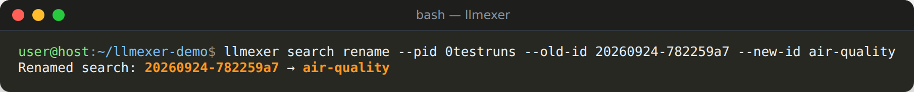
search rename also renames any result files that belong to the search. Right after search create there is only the YAML file, so renaming it by hand in the searches/ folder works just as well.
Write the query
Open searches/air-quality.yaml in any text editor and replace the value of the key query with our search string. The query uses the Semantic Scholar bulk search syntax:
|means OR+means AND,- quotes mark exact phrases.
The example search term contains mix of English and German terms:
query: '("air quality" | "luftmessstationen") + ("demands" | "requirements" | "anforderungen" | "bedarfsorientiert") + (measure | measuring | tracking | monitoring | messungen) + ( provision | providing | bereitstellung)'
year: 2020-2025
onlyOpenAccess: false
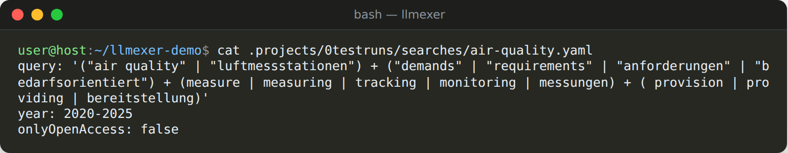
The year range and the onlyOpenAccess flag come from the template; adjust them as needed. To see all searches of the project, run:
llmexer search list --pid 0testruns
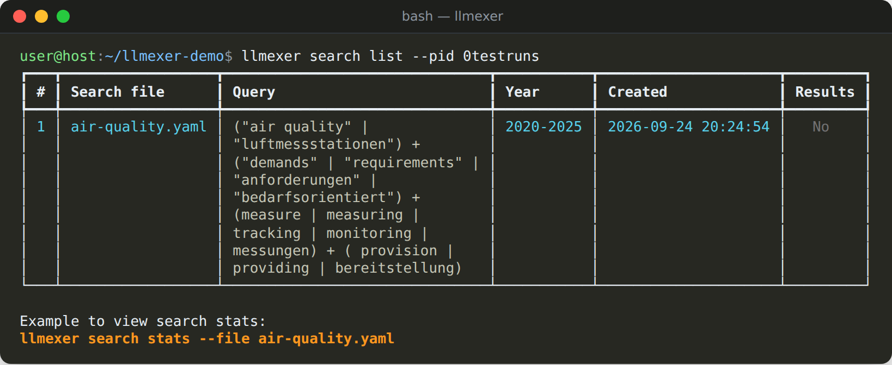
The Results column shows No because the search has not been run yet.
Step 4: Run the search
Then you are done with configuring the search string, now you can run the search itself:
llmexer search run --pid 0testruns --file air-quality.yaml
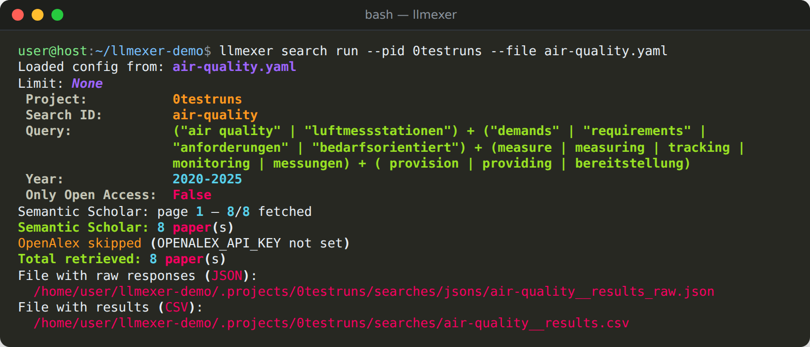
llmexer queries the Semantic Scholar bulk API and (if OPENALEX_API_KEY is set, OpenAlex will be also searched). Two files are created in folder searches/:
air-quality__results.csv: one row per paper with title, authors, abstract, year, DOI, detected language, open access flag and morejsons/air-quality__results_raw.json: the raw API responses (JSON files are kept for debugging reasons)
Before going further, it's worth taking a quick look at what you found:
llmexer search stats --pid 0testruns --file air-quality.yaml
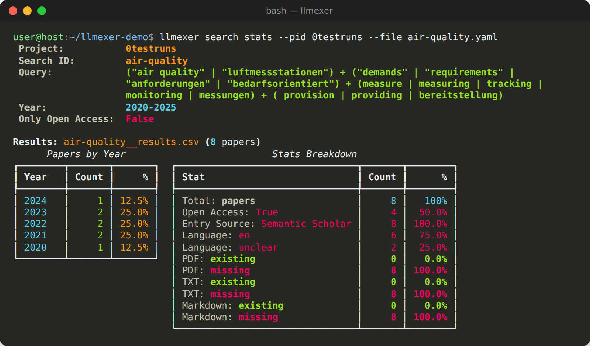
If the result set needs cleaning, llmexer search filter can drop rows by language, source, DOI or download state, and llmexer search export renders the results as a browseable HTML page. This particular export to HTML feature is quite usefully for quickly viewing search results.
Step 5: Initialize the experiment
When you are done with search, it is a time to start experimenting with LLMs using data have been found through the search (e.g., abstracts, titles, keywords, etc.). For that, an initial step is required (will create folders and files used by the tool later):
llmexer exp init --pid 0testruns
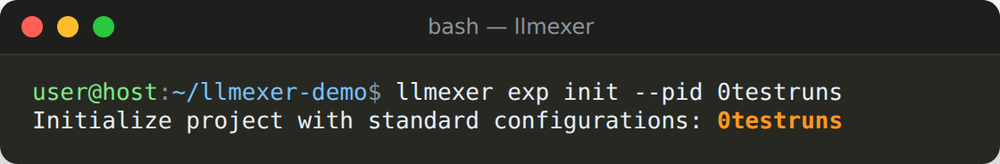
Side note: exp is a short alias for experiment
This creates the experiment/ folder with templates that together describe an experiment:
| File | What it holds |
|---|---|
data.csv |
The input rows (papers) |
prompts/prompt01.txt |
A starter Jinja2 prompt using {{title}}, {{abstract}}, {{doi}} and {{year}} |
mapping.csv |
Which prompt each data row uses |
llms-for-experiment.csv |
The models to test, each with a parameter profile |
llm-params.csv |
Hyperparameter profiles (temperature, top_p, max_tokens, …) |
The starter prompt asks the model to check whether a paper's title describes its abstract and to answer in JSON. Replace it with your own screening question, or add more prompts as prompt02.txt, prompt03.txt and so on.
Step 6: Copy the search results into the experiment
Then the experiment has been initialized, not you could copy your search data into the experiment related files.
llmexer exp copy-search --pid 0testruns --file air-quality__results.csv
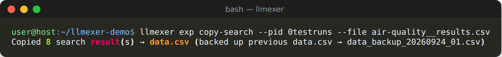
This replaces the template data.csv with the search results in the format ID;Title;Abstract;year;doi;authors, keeping the original row order. The previous data.csv file is backed up, so nothing is lost. However, if the backup is not needed anymore, it could bre manually removed anytime.
Step 7: Map data rows to prompts
This step could be done manually, but there is a convince CLI command for that - map.
map rebuilds mapping.csv by pairing every data row with every prompt. With one prompt, each paper gets one row. To pick specific prompts, pass --prompt prompt01,prompt02.
llmexer exp map --pid 0testruns
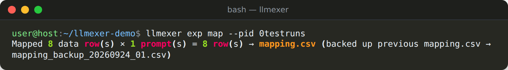
Choose your LLM models
Now is the time to open llms-for-experiment.csv and list the models you actually have access to.
Each row names a provider, a model and a profile_name. The profile must exist in llm-params.csv with the same provider and model. That's the file, where temperature, top_p and other hyperparameters are configured. Listing a model twice with two profiles runs with a bit different setting (e.g., temperature) is handy for comparing behavior of the same LLM model, a deterministic and a creative configuration.
Step 8: Try a single combination first
Before sending hundreds of requests, check what one prompt returns for one paper. If you don't want to type the IDs yourself, let llmexer suggest a random combination:
llmexer exp try --pid 0testruns --suggest
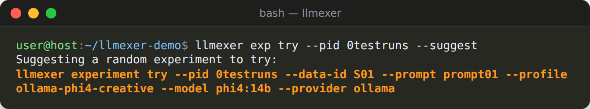
--suggest runs nothing; it prints a ready-to-use command. Copy and run it to call the model and see its answer.
Adding the global --dry-run flag prints the fully rendered prompt without calling the LLM, which is the fastest way to check that your template fills in correctly:
llmexer --dry-run exp try --pid 0testruns --data-id S01 --prompt prompt01 --profile ollama-phi4-creative
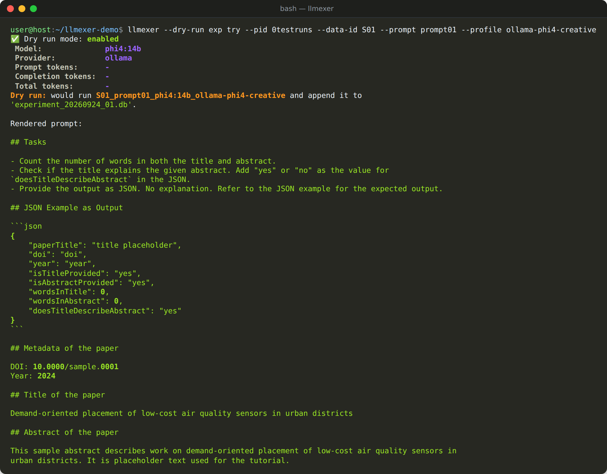
Step 9: Generate the experiments
Once the prompt deliver expected results, generate the full experiment:
llmexer exp generate --pid 0testruns
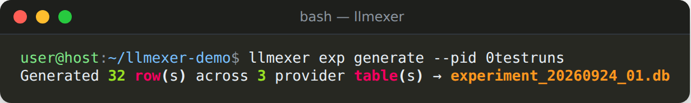
generate renders every combination of data row × prompt × model × parameter profile and stores it in a new SQLite database, experiment/experiment_<date>_<n>.db.
In our example, 8 papers × 1 prompt × 4 models give 32 rows spread over three provider tables. A model without a matching profile is skipped.
Use llmexer --dry-run exp generate --pid 0testruns to see how many rows you would get without writing anything. If you add a model or prompt later, llmexer exp update appends the missing combinations to the existing database instead of starting over.
Step 10: Run the experiments
Finally running the experiments:
llmexer exp run --pid 0testruns --parallel-calls 2
run sends every pending row to its provider and writes the answers back into the same database. --parallel-calls 2 keeps two requests in flight at once (since most of a run is spent waiting for the model, parallel calls saves a lot of time). In addition, each response is also saved as a JSON file in experiment/responses/.
Want to see what will happen first without sending any request to the LLM? Add --dry-run:
llmexer --dry-run exp run --pid 0testruns --parallel-calls 2
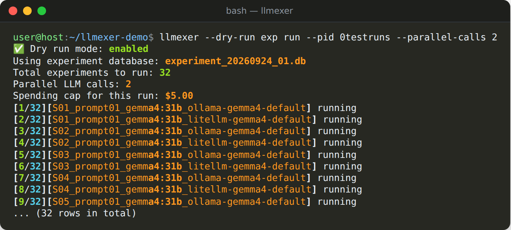
A few things that make long runs less painful:
- Resumable: rows that already finished are skipped when you run the command again, so an interrupted run just continues.
- Filterable:
--filter-provider ollama,--filter-model gemma4:31bor--filter-profilelimit a run to part of the database, which helps when only one backend is up. - Budget cap: OpenRouter spending per run is limited by
PROVIDER_OPENROUTER_MAX_SPEND(default $5).
Progress and token counts are available at any time with llmexer exp stats --pid 0testruns.
Step 11: Export a report
llmexer exp export --pid 0testruns
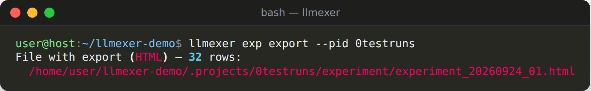
The export is a single self-contained HTML page written next to the database. It has sortable columns, per-column filters, a copy button on every cell, and a ready-to-run experiment try command for each row:
Exports accept the same filters as run, plus two of their own: --filter-code (a glob over the row code) and --filter-response (a regular expression over the model answer), for example --filter-response '"doesTitleDescribeAbstract":\s*"no"'. This filter option is useful, if a database with experiments contains over 10K rows - without a filter, the exported HTML will be too big for a browser to handle.
Next steps
- Analyse the answers: creates Jupyter notebooks that parse the JSON answers into columns, and measures agreement between models with Cohen's kappa.
llmexer analysis init --pid 0testrunsllmexer analysis add-agreement
- Work with full texts: fetches open-access PDFs by DOI,
llmexer papers extractturns them into text, andllmexer exp copy-papersfeeds that text into an experiment instead of abstracts.llmexer papers download
- Look under the hood: the experiment database is plain SQLite, so you can open it in a tool like DBeaver and use SQL to query it directly.
The source code, full documentation and issue tracker are on GitHub: github.com/vdmitriyev/llmexer.
Read more: